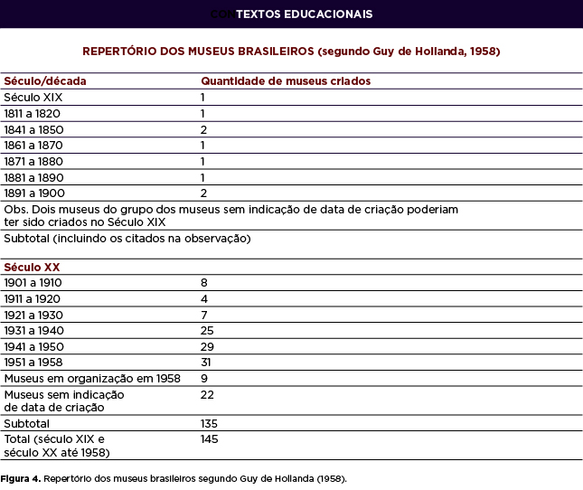
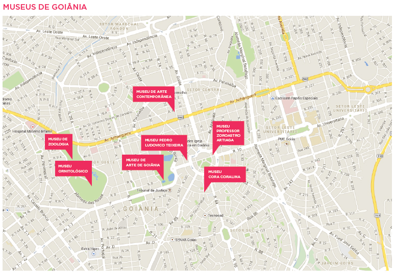

3. Caracterização das principais instituições culturais
3.1 Museus
A definição de museu vem sendo reformulada desde 1956, quando foi criada uma primeira proposta. A cada nova proposta, poucas são as mudanças perceptíveis. No entanto, num panorama geral, é possível observarmos como tem ganhado força a atuação social, política e educativa dos museus.
Segundo o Comitê Internacional de Museu (ICOM), em sua primeira definição, de 1956:
Museu é um estabelecimento de caráter permanente administrado para interesse geral, com a finalidade de conservar, estudar, valorizar de diversas maneiras, conjunto de elementos de valor cultural: coleções de objetos artísticos, históricos, científicos e técnicos, jardins botânicos e zoológicos, aquários.
Nessa definição, o foco nas coleções e nos bens materiais fica claro, o que seria parcialmente modificado 45 anos depois em definição aprovada na 20ª Assembléia Geral do ICOM, em Barcelona, Espanha, 06 de julho de 2001:
Museu é uma instituição permanente, sem fins lucrativos, a serviço da sociedade e do seu desenvolvimento, aberta ao público e que adquire, conserva, investiga, difunde e expõe os testemunhos materiais do homem e de seu entorno, para educação e deleite da sociedade.
O museu já não é mais uma instituição voltada somente para o trabalho com coleções, mas que também deve servir à sociedade e ao seu desenvolvimento, abrindo o leque de possibilidades de fruição.
Embora ultrapassado, o conceito de coleção como o centro da instituição museal sempre retorna como feito. Exemplo disso está no tema eleito para comemorar o Dia Internacional de Museus, do Comitê Internacional de Museus (ICOM), de 2014: “Coleções de Museus criam Conexões” , que no site do Instituto Brasileiro de Museus (Ibram) assumiu um caráter extremamente conservador: “Museus: as coleções criam conexões”.
Sugestão de leitura: artigos da Revista Museu sobre o Dia Internacional de Museus, versão 2014, no link abaixo revistamuseu.com.br.
Na definição do Iphan, além de servir à sociedade em seus princípios e ideais institucionais, o museu também deve ser aberto ao público. Ainda nessa definição, podemos encontrar também a inclusão dos bens imateriais:
o museu é uma instituição permanente, aberta ao público, sem fins lucrativos, a serviço da sociedade e de seu desenvolvimento, que adquire, conserva, pesquisa, expõe e divulga as evidências materiais e os bens representativos do homem e da natureza, com a finalidade de promover o conhecimento, a educação e o lazer (IPHAN, 2014).
O Ibram considera como museus, na instituição da Lei nº 11.904, de 11 de julho de 2009, em seu Artigo 1º:
Página 102as instituições sem fins lucrativos que conservam, investigam, comunicam, interpretam e expõem, para fins de preservação, estudo, pesquisa, educação, contemplação e turismo, conjuntos e coleções de valor histórico, artístico, científico, técnico ou de qualquer outra natureza cultural, abertas ao público, a serviço da sociedade e de seu desenvolvimento [...] Parágrafo único. Enquadrar-se-ão nesta Lei as instituições e os processos museológicos voltados para o trabalho com o patrimônio cultural e o território visando ao desenvolvimento cultural e socioeconômico e à participação das comunidades (BRASIL, 2009).
Fica claro pelo próprio Estatuto a relação entre o museu, o patrimônio cultural e o desenvolvimento local, caracterizando essa instituição como uma entidade fortemente ligada à construção e afirmação de identidades. Destaca-se o aspecto da “participação das comunidades”, uma vez entendida como integrante das redes sociais e políticas que atuam na construção de referências culturais de uma sociedade.
Essa noção de museu como instituição e processo museológico é retomada no Decreto nº 8.124, de 17 de outubro de 2013, que regulamenta a Lei 11.904, como pode ser visto abaixo:
Art. 2º Para fins desse Decreto, consideram-se: [...] IX – museu – instituição sem fins lucrativos, de natureza cultural, que conserva, investiga, comunica, interpreta e expõe, para fins de preservação, estudo, pesquisa, educação, contemplação e turismo, conjuntos e coleções de valor histórico, artístico, científico, técnico ou de outra natureza cultural, abertos ao público, a serviço da sociedade e de seu desenvolvimento; [...] X – processo museológico – programa, projeto e ação em desenvolvimento ou desenvolvido com fundamentos teórico e prático da museologia, que considere o território, o patrimônio cultural e a memória social de comunidades específicas, para produzir conhecimento e desenvolvimento cultural e socioeconômico (BRASIL, 2013).
Assim, distinguem-se museus de processos museológicos. Neste caso, os museus deverão ser reconhecidos via registro em órgão público competente. Os processos, por sua vez, não apresentam essa exigência, uma vez que podem ser realizados em instituições de variadas tipologias, como em escolas, bibliotecas, universidades e, inclusive, em um museu.
Pelo que viemos estudando sobre essa instituição até agora, cremos que podemos adotar uma definição mais poética e abrangente de museu, que até pouco tempo aparecia na página do Ibram na internet:
Os museus são casas que guardam e apresentam sonhos, sentimentos, pensamentos e intuições que ganham corpo através de imagens, cores, sons e formas. Os museus são pontes, portas e janelas que ligam e desligam mundos, tempos, culturas e pessoas diferentes. Os museus são conceitos e práticas em metamorfose.
MUSEUS – TEMPLOS OU PROCESSOS?
A definição do ICOM inclui também, como museus, sítios e monumentos, sejam eles de caráter natural ou histórico, que desenvolvem o “processo museológico”, composto pelas atividades de aquisição, conservação e difusão do patrimônio, que incluem a documentação, a pesquisa e a educação. Assim, jardins zoológicos e botânicos, aquários e viveiros, além dos centros de ciência e planetários, galerias de exposição, institutos de conservação, parques naturais, organizações, ministérios, centros culturais e qualquer outra entidade que não comercial e que realizem pesquisas, educação, formação, documentação e divulgação são consideradas como museus. Incluíram-se, então, aquelas que reúnem todas as características de um museu e aquelas que oferecem meios para que essas atividades sejam desenvolvidas e incluídas como partes do museu.
Dessa forma, o museu deve ser compreendido não como templo ou casa, mas como processo que, se realizado de forma completa, é instituído, ainda que no âmbito abstrato.
Sugestão de atividade:
- A partir dessa ideia, escolha uma entidade de sua cidade e analise a possibilidade de ela ser considerada um museu. Leve em conta as etapas do processo museológico de aquisição, conservação, documentação, pesquisa e comunicação da instituição.
- Escolha um museu e analise como se dá a relação de poder nessa instituição, elencando os atores e caracterizando sua atuação na construção e afirmação de identidades.
Obs.: Indicamos/Recomendamos que sejam realizadas visitas in loco para o desenvolvimento dessas atividades.
Função
Pela conceituação, definição e natureza de suas atividades, temos que os museus têm três funções básicas: a preservação, que compreende as ações de documentação e conservação em suas múltiplas especificidades; a pesquisa ou investigação, também em seus variados aspectos e possibilidades, aplicada às ciências básicas ou às de cunho museológico, e a comunicação, aí incluídas as exposições, as atividades educativas e culturais e as ações de divulgação da imagem institucional e de suas atividades, bem como a disseminação do conhecimento produzido nos museus por meio de publicações científicas e de material didático.
Processo de institucionalização
No Brasil, a criação dos primeiros museus ocorreu com a chegada da família real portuguesa, a partir de valores e padrões europeus, e esteve diretamente atrelada aos discursos científicos e nacionalistas. Era importante não só propagar o conhecimento científico, as riquezas naturais da colônia, as descobertas feitas em solo brasileiro, como também evidenciar o poderio da classe abastada da nação em formação. Era necessário semear museus no deserto da Colônia. O Museu Nacional, como exemplo máximo desse momento, reuniu o que de mais representativo do saber universal pode ser trazido para o país. Múmias, sarcófagos e objetos egípcios foram adquiridos nesse período e formam, ainda hoje, uma das mais importantes coleções da América Latina (SANTOS, 2002, p. 99 - 107).
Já os museus criados na segunda metade do século XIX tiveram um caráter mais regionalista, constituindo acervos locais ou de ramos especializados da ciência, como o Museu do Pará de 1868 (atual Museu Paraense Emílio Goeldi) e o Museu Paulista, inaugurado em 1893, com objetos da elite paulistana.
Saiba mais sobre a criação dos primeiros museus no Brasil no texto de Santos (2002), que também aborda o surgimento dos museus na Europa, disponível no site revistas.ulusofona.pt.
A partir dos anos 1890, os diretores dos museus, a exemplo de diretores como João Batista Lacerda, no Museu Nacional, Herman von Ihering, no Museu Paulista, e Emílio Goeldi, no Museu do Pará, procuram imprimir um caráter mais científico e enciclopedista às suas atividades, preocupados com a classificação e análise comparativa de seus acervos. Também buscaram ocupar espaços entre as instituições de pesquisa, criando revistas especializadas, algumas existentes até os dias atuais, como o Boletim do Museu Goeldi.
Mas foi somente no século XX que o cenário museal brasileiro se delineou efetivamente. No Brasil, esse foi o século dos museus, conforme ilustra a Figura 4 abaixo, sistematizado por Chagas (2003, p. 79) a partir dos dados coligidos por Guy de Holanda (1958) em levantamento feito a partir de demanda da UNESCO.
{kind=link}
Organograma Funcional do Instituto do Patrimônio Histórico e Artístico Nacional.
 Página 104Nota-se, pela observação do quadro, que é mais precisamente após os anos 1930 que aconteceu uma maior proliferação dos museus. A busca pelas raízes e identidade nacional - advogadas pelo Movimento Modernista, aliada às reformulações propostas com o advento do Estado Novo, levaram a uma ideologia de fortalecimento do Estado brasileiro. Essa ideologia apoiou-se na recomposição do passado e na construção de mitos, símbolos e heróis, tendo sua materialização na criação de museus (CHAGAS, 2003, p. 80-81).
Evidencia-se, assim, que a criação de museus, em sua maioria, esteve atrelada aos interesses políticos de primeira hora, sem maior compromisso com a manutenção e permanência dessas instituições. Tanto que muitos dos museus criados nesses primeiros tempos de expansão foram extintos.
Mais recentemente, Hugues de Varine refere-se ao problema da criação indiscriminada de museus como decorrência da “paixão pelo patrimônio [que] é tal atualmente que os museus floresceram, em quase todos os países, de maneira selvagem e às vezes até mesmo cômica” (VARINE, 2012, p. 197).
Na Europa, as grandes coleções - antiquários, gabinetes de curiosidades e galerias de retratos - tinham como objetivo atrair a admiração pela riqueza e pelo exotismo dos exemplares. Exibidas para um público muito seleto, eram organizadas segundo a predileção pessoal do colecionador. Os primeiros museus abertos ao público nasceram nos séculos XVIII e XIX. Foram abertas ao público essas coleções, que acumulavam, classificavam e expunham com intenção enciclopédica e universalista, o conhecimento humano da época, com o propósito de se constituírem em templos do saber, da riqueza e do poder das nações que representavam. Nessas instituições já eram desenvolvidas atividades classificatórias e educativas. Critérios seletivos pessoais foram substituídos por discussões metodológicas, e práticas de conservação, exposição e segurança foram implementadas (SANTOS, 2002).
Na atualidade, para a criação de museus no Brasil, devem ser seguidos alguns procedimentos definidos pelo Estatuto de Museus, Lei nº 11.904, de 11 de julho de 2009, regulamentado pelo Decreto nº 8.124, de 17 de outubro de 2013.
Exemplos goianos
Os museus podem ser caracterizados por variados tipos de acervo. Em Goiás, especialmente em Goiânia, são encontradas instituições que se denominam museus com acervos que vão de artes às ciências biológicas. São elas:
- Instituto Hidasi– Museu da Biodiversidade;
- Museu de Zoologia e Ornitologia do Parque Zoológico;
- Museu Goiano Professor Zoroastro Artiaga;
- Museu de Arte de Goiânia;
- Museu Antropológico da UFG;
- Museu da Imagem e do Som de Goiás;
- Museu de Arte Contemporânea de Goiás;
- Museu Pedro Ludovico Teixeira;
- Museu de Morfologia Arlindo Coelho de Souza (ICB/ UFG);
- Centro Cultural Jesco Puttkamer – PUC-GO;
- Planetário da UFG;
- Vila Cultural Cora Coralina;
- Memorial do Cerrado;
- Museu Carpológico do Jardim Botânico Amália Hermano Teixeira;\
- Instituto Histórico Geográfico de Goiás;
- Centro Cultural UFG;
- Instituto de Pesquisas e Estudos Históricos do Brasil Central;
- Academia Feminina de Letras e Artes de Goiás;
- Academia Goiana de Letras.
{kind=link}
Museus de Goiânia
Sugestão de atividade:
Escolha um desses museus, ou outro de sua localidade, e faça sua própria análise do contexto político-ideológico de sua criação.